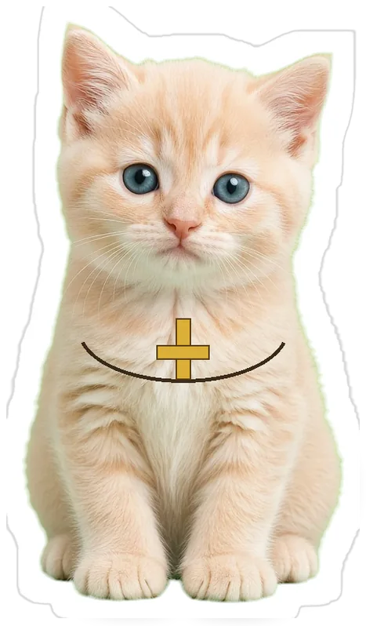
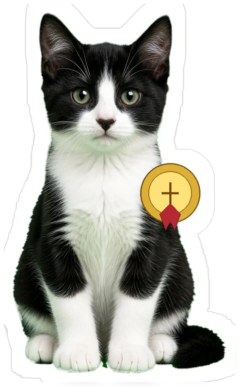
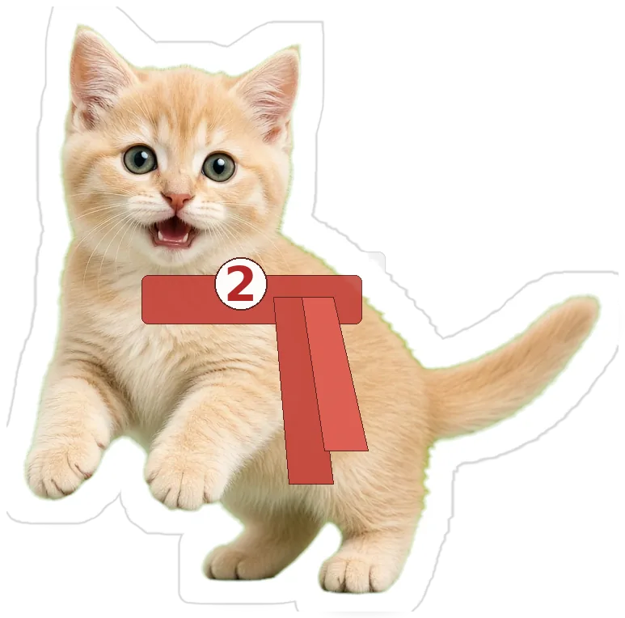
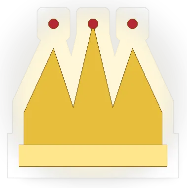
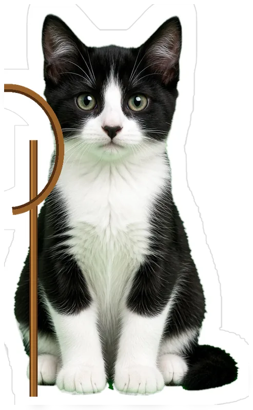

Tu cuaderno, en pedacitos fáciles de digerir: 3 o 4 líneas, el versículo y una frase para recordar. Puedes leer o escuchar, incluso con la pantalla bloqueada. Primero la identidad, luego Estructura (en verde) y Crecimiento (en rosa).
Todo surge de cuál es tu identidad en Cristo. El maestro lo repite una y otra vez.
No empiezas por lo que haces en la iglesia, sino por quién eres en Él: hija, hijo de Dios.
En tu cuaderno dice «1 Juan 1:12», pero la cita es Juan 1:12 (el Evangelio). El texto oficial dice «hijos de Dios».
¡NO!
Yo valgo por lo que HAGO 😒
Empiezo por quién SOY en Cristo 🙏
✗ Empiezo por lo que hago
✓ Empiezo por quién soy en Cristo
Juan 1:12 · RVR1960 · toca para memorizar
“Mas a todos los que le recibieron, a los que creen en su nombre, les dio potestad de ser hechos hijos de Dios.”
«Todo surge de tu identidad en Cristo.»
¿Por lo que haces? 🤔 NO. ¿Por quién eres? YES 🙏✨
Gatito pregunta
¿De qué libro es «les dio potestad de ser hechos hijos de Dios»?
Estructura
Fundamentos bíblicos de la iglesia y la función de sus miembros, para reconocer la importancia de la unidad bajo el señorío de Cristo.
UNIDAD BAJO EL SEÑORÍO DE CRISTO ✨
2-. ESTRUCTURAEl objetivo de esta parte
Tu apunte
Este es el propósito de la primera parte del temario.
Identificar los fundamentos bíblicos de la iglesia y la función de sus miembros,
para reconocer la importancia de la unidad bajo el señorío de Cristo.
¿Fundamentos? ¿Miembros? ¿Unidad? 🤔
¡Sí! Y todo bajo el señorío de Cristo 🙏
✗ Un temario suelto, sin rumbo
✓ Identificar fundamentos, función y unidad bajo Cristo
«Unidad bajo el señorío de Cristo.»
Fundamentos + miembros + unidad. Bajo Cristo. 🐾✨
Gatito pregunta
El objetivo de Estructura es reconocer la importancia de la unidad…
LA IGLESIA ES EL CUERPO DE CRISTO 🐾
3-. LA IGLESIA ES EL CUERPO
Tu apunte
Tenemos en Cristo el privilegio de ser el cuerpo de Cristo.
En el cuerpo hay unidad y diversidad: muchos miembros, un solo cuerpo.
Cada uno es un miembro en particular. Nadie sobra.
¡NO!
Yo no sirvo, ustedes sí 😒
Todos somos necesarios. ¡Tú también! ✨
Vosotros, pues, sois el cuerpo 🙏
✗ “Yo no sirvo, que sirvan otros”
✓ Cada miembro es necesario en el cuerpo
1 Corintios 12:27 · RVR1960 · toca para memorizar
“Vosotros, pues, sois el cuerpo de Cristo, y miembros cada uno en particular.”
«Vosotros sois el cuerpo de Cristo, y miembros cada uno en particular.»
¿Yo no sirvo? 😒 NO. ¿Todos somos necesarios? YES I DO 🙋♀️🐾
Gatito pregunta
Según 1 Corintios 12:27, nosotros somos…
AMADA, COMPRADA, SANTIFICADA 💍✨
4-. LA IGLESIA ES LA NOVIA
Tu apunte
La iglesia es amada, comprada con sangre y santificada.
Esto no es un misterio pequeño: habla de Cristo y de la iglesia.
Él la quiere, la pagó y la está limpiando.
Soy la gatita iglesia: amada y comprada con sangre 🙏
¡Cristo ama a su iglesia! ✨
✗ La iglesia es un evento al que asisto
✓ La iglesia es la esposa que Cristo ama y santifica
Efesios 5:32 · RVR1960 · toca para memorizar
“Grande es este misterio; mas yo digo esto respecto de Cristo y de la iglesia.”
«Amada, comprada con sangre y santificada.»
Amada. Comprada. Santificada. Así la ve Él. 💍🙏
Gatito pregunta
Efesios 5:32 dice que este misterio es respecto de…
UN LINAJE ESCOGIDO, REAL SACERDOCIO 🙏
5-. PUEBLO DE DIOS
Tu apunte
La iglesia la conforman personas redimidas por la sangre de Cristo.
Fuimos comprados por Cristo y separados del mundo.
Somos linaje escogido, real sacerdocio, nación santa.
¡NO!
¿Esto es un club o qué? 🤔
Somos pueblo de Dios. Anunciamos sus virtudes ✨

✗ Un club de gente parecida
✓ Linaje escogido, real sacerdocio, nación santa
1 Pedro 2:9 · RVR1960 · toca para memorizar
“Mas vosotros sois linaje escogido, real sacerdocio, nación santa, pueblo adquirido por Dios, para que anunciéis las virtudes de aquel que os llamó de las tinieblas a su luz admirable.”
«Linaje escogido, pueblo adquirido por Dios.»
No es un club. Es pueblo de Dios. 🙏✨
Gatito pregunta
1 Pedro 2:9 nos llama «pueblo…»
YA NO SOIS EXTRANJEROS 🏠🙏
6-. CASA DE DIOS · FAMILIA
Tu apunte
Ya no somos extranjeros: somos familia de Dios.
Cristo es la piedra del ángulo, y juntos somos su casa, su templo.
En la iglesia tienes padre, hermanos, un hogar.
¡NO!
Yo no encajo aquí 😒
Ya no eres extranjero. Eres familia de Dios ✨
¡Somos casa de Dios! 🐾
✗ “Yo no encajo, soy de visita”
✓ Sois ciudadanos y miembros de la familia de Dios
Efesios 2:19 · RVR1960 · toca para memorizar
“Así que ya no sois extranjeros ni advenedizos, sino conciudadanos de los santos, y miembros de la familia de Dios.”
«Somos familia de Dios.»
¿Extranjero? 🤔 Ya no. Ahora eres familia. 🏠🙏
Gatito pregunta
Según Efesios 2:19, ya no somos extranjeros, sino…
SOMOS EMBAJADORES EN NOMBRE DE CRISTO ✨
7-. EMBAJADORES
Tu apunte
Somos representantes de Cristo en la tierra.
Dios nos dio el ministerio de la reconciliación.
Como si Dios rogase por medio de nosotros: reconciliaos con Dios.
Reconciliaos con Dios. Yo represento al Rey 🙏

Donde yo voy, voy de embajador 🐾
✗ La fe se queda adentro del templo
✓ Somos embajadores: llevamos el mensaje de reconciliación
2 Corintios 5:20 · RVR1960 · toca para memorizar
“Así que, somos embajadores en nombre de Cristo, como si Dios rogase por medio de nosotros; os rogamos en nombre de Cristo: Reconciliaos con Dios.”
«Somos embajadores en nombre de Cristo.»
Tú no vas de paseo. Vas de embajador. ✨🐾
Gatito pregunta
2 Corintios 5:20 dice que somos…
NO LOS SANOS, SINO LOS ENFERMOS 🏥🙏
8-. HOSPITAL
Tu apunte
La iglesia es un lugar para recuperarnos de nuestras dolencias.
Jesús no vino a llamar a los que se creen sanos, sino a los enfermos.
Aquí se viene a sanar, no a fingir que ya está todo bien.
¡NO!
Aquí solo entran los que ya están bien 😒
Estoy herido…
Justamente por eso estás en casa ✨
✗ Solo los que ya están bien pueden entrar
✓ La iglesia es hospital: Jesús llama a los pecadores
Marcos 2:17 · RVR1960 · toca para memorizar
“Los sanos no tienen necesidad de médico, sino los enfermos. No he venido a llamar a justos, sino a pecadores.”
«No he venido a llamar a justos, sino a pecadores.»
¿Solo los perfectos? 😒 ¡NO! Aquí se sana. 🏥🙏
Gatito pregunta
Según Marcos 2:17, Jesús vino a llamar a…
MEJOR SON DOS QUE UNO 🙌🐾
9-. EQUIPO
Tu apunte
No estamos solos: tenemos hermanos.
Si uno cae, el otro lo levanta.
Un cordón de tres dobleces no se rompe pronto.
¡NO!
Yo solo… se cansa 😒
¡Juntos rendimos más! ✨
Y un cordón de tres dobleces no se rompe 🙏

✗ “Yo solo puedo con todo”
✓ Mejor son dos que uno: nos levantamos el uno al otro
Eclesiastés 4:9–10 · RVR1960 · toca para memorizar
“Mejores son dos que uno, porque tienen mejor paga de su trabajo. Porque si cayeren, el uno levantará a su compañero.”
«Mejores son dos que uno.»
¿Solo? Se cansa. ¿Juntos? Mejor son dos. 🙌🐾
Gatito pregunta
Eclesiastés 4 dice: «Mejores son…»
EN ESTO CONOCERÁN QUE SOIS MIS DISCÍPULOS 💛✨
10-. LUGAR DE AMOR
Tu apunte
La iglesia es donde se ama y se es amado.
El mandamiento nuevo es amarnos como Cristo nos amó.
En eso conocerán que somos sus discípulos.
Que os améis unos a otros 🙏
¡Esa es nuestra marca! ✨
✗ Nos reconocen por el show o por el gusto
✓ Nos reconocen por el amor entre nosotros
Juan 13:34–35 · RVR1960 · toca para memorizar
“Un mandamiento nuevo os doy: Que os améis unos a otros; como yo os he amado, que también os améis unos a otros. En esto conocerán todos que sois mis discípulos, si tuviereis amor los unos con los otros.”
«En esto conocerán que sois mis discípulos.»
¿La marca de la iglesia? El amor. 💛✨
Gatito pregunta
Según Juan 13:35, conocerán que somos discípulos si…
LA IGLESIA ES DE CRISTO. ÉL DIRIGE ✝️🙏
11-. CRISTO ES LA CABEZA
Tu apunte
La iglesia es de Dios, de Cristo. No es de un líder humano.
Como cabeza, Él dirige, coordina, da dirección y gobierno.
La pregunta del gatito: «Señor, ¿qué quieres que yo haga?»
A Cristo no lo dibujamos como gatito. Lo representamos con la cruz y la corona: Él es la cabeza, nosotros el cuerpo.

¡NO!
La iglesia es MÍA 😒
No. Es de Cristo. Él dirige, coordina y gobierna ✨
✗ “La iglesia es mía / de mi grupo”
✓ Cristo es la cabeza: dirige, coordina, da gobierno
Colosenses 1:18 · RVR1960 · toca para memorizar
“Y él es la cabeza del cuerpo que es la iglesia, él que es el principio, el primogénito de entre los muertos, para que en todo tenga la preeminencia.”
«La iglesia es de Cristo; Él es la cabeza.»
¿La iglesia es mía? 😒 ¡NO! Es de Cristo. Él es la cabeza. ✝️🙏
Gatito pregunta
¿Quién es la cabeza del cuerpo, que es la iglesia?
UNIDAD, NO UNIFORMIDAD ✨
12-. CRISTO Y LA UNIDAD
Tu apunte
Nuestra unidad viene de Dios, no la inventamos nosotros.
Unidad no es uniformidad: la diversidad de funciones no destruye la unidad.
Como cuerpo, todos contribuimos a la edificación.
¡NO!
Unidad = todos iguales 😒
Un solo cuerpo, muchos miembros 🙏
Diversos, pero uno en Cristo ✨
✗ Unidad = todos iguales
✓ Unidad con diversidad: un cuerpo, muchos miembros
1 Corintios 12:12 · RVR1960 · toca para memorizar
“Porque así como el cuerpo es uno, y tiene muchos miembros, pero todos los miembros del cuerpo, siendo muchos, son un solo cuerpo, así también Cristo.”
«Unidad no es uniformidad.»
¿Unidad = todos iguales? 🤔 NO. Unidad con diversidad. ✨
Gatito pregunta
«Unidad no es…»
SUBORDINA TODA TU VIDA A CRISTO 🙏
13-. CRISTO COMO EL SEÑOR
Tu apunte
Subordina toda tu vida a Él: doctrina, decisiones, servicio, prioridades.
El servicio es para la gloria de Dios; los dones, para su honra.
Tus preferencias no son tu autoridad final. Es Cristo.
¡NO!
Mis preferencias mandan 😒
Cristo manda. Los dones son para su honra ✨
✗ Mis preferencias mandan
✓ Cristo manda. Él es antes de todas las cosas
Colosenses 1:16–17 · RVR1960 · toca para memorizar
“Todo fue creado por medio de él y para él. Y él es antes de todas las cosas, y todas las cosas en él subsisten.”
«Tus preferencias no son tu autoridad final: es Cristo.»
¿Mis preferencias mandan? 😒 NO. Cristo manda. 🙏
Gatito pregunta
¿Cuál es tu autoridad final?
UN CONSUMIDOR NO EDIFICA, UN MIEMBRO SÍ 🐾
14-. MIEMBROS DEL CUERPO
Tu apunte
Cada miembro es vital: tiene dones, talentos, energías, funciones y responsabilidades.
Servimos para edificarnos y crecer a la estatura de Cristo.
Un consumidor no edifica. Un miembro, sí.
¡NO!
Yo solo vengo a recibir 😒
Yo soy miembro: sirvo y edifico ✨
✗ Un consumidor solo recibe
✓ Un miembro edifica, con su don, para el cuerpo
Romanos 12:4–5 · RVR1960 · toca para memorizar
“Porque de la manera que en un cuerpo tenemos muchos miembros, pero no todos los miembros tienen la misma función, así nosotros, siendo muchos, somos un cuerpo en Cristo, y todos miembros los unos de los otros.”
«Un consumidor no edifica, un miembro sí.»
¿Consumidor? NO. ¿Miembro? YES I DO 🙋♀️🐾
Gatito pregunta
La frase de tu cuaderno es: «Un consumidor no edifica…»
SOLÍCITOS EN GUARDAR LA UNIDAD 🙏✨
15-. UNIDAD DE LA IGLESIA
Tu apunte
Es mandato del Señor y obra de Dios.
La división es contraria a la voluntad de Cristo: enferma a la iglesia.
Guardar la unidad requiere un esfuerzo constante.
¡NO!
Yo me separo, total da igual 😒
La división enferma al cuerpo. Hay que cuidarla 🙏
✗ La división da igual, cada quien por su lado
✓ La unidad es mandato y obra de Dios: esfuerzo constante
Efesios 4:3 · RVR1960 · toca para memorizar
“solícitos en guardar la unidad del Espíritu en el vínculo de la paz.”
«Solícitos en guardar la unidad del Espíritu.»
La división enferma. La unidad se cuida. 🙏✨
Gatito pregunta
Efesios 4:3 nos pide ser solícitos en guardar…
Crecimiento
Analizar el rol de la labor pastoral y las disciplinas espirituales para desarrollar madurez y devoción personal.
MADUREZ Y DEVOCIÓN PERSONAL 🌱✨
16-. CRECIMIENTOEl objetivo de esta parte
Tu apunte
Esta es la segunda parte grande del temario. En tu cuaderno va en rosa.
Analizar el rol de la labor pastoral y las disciplinas espirituales,
para desarrollar madurez y devoción personal.
¿Cómo crezco? 🤔
Labor pastoral + disciplinas espirituales 📖
✗ Crecer es solo “venir más”
✓ Analizar la labor pastoral y las disciplinas para madurar
«Madurez y devoción personal.»
Madurez + devoción. Eso es crecimiento. 🌱✨
Gatito pregunta
El objetivo de Crecimiento es desarrollar…
CUIDA, ALIMENTA, GUÍA Y PROTEGE 🙏
17-. LABOR PASTORAL
Tu apunte
Para que el cuerpo crezca sano se necesitan pastores y maestros. Dios elige y la iglesia reconoce.
El pastor cuida, alimenta, guía y protege el rebaño, que es de Cristo. Su propósito: preparar a los santos para la obra del ministerio.
Ser pastor requiere carácter aprobado, no solo habilidades. Valóralos, ora, sírveles y sométete cuando sean bíblicos. Ellos guían con su ejemplo.
Además de Hechos 20:28, ten a la mano: carácter aprobado (1 Ti 3:1–7), valora y ora (1 Ts 5:12–13) y el ejemplo (1 P 5:3).
El rebaño le costó sangre a Cristo ✨

Yo lo valoro y oro por él 🙏
¡NO!
Es un empleado, no le debo respeto 😒
✗ El pastor es un empleado más
✓ Carácter aprobado; valóralo, ora, y sigue el ejemplo
Hechos 20:28 · RVR1960 · toca para memorizar
“Por tanto, mirad por vosotros, y por todo el rebaño en que el Espíritu Santo os ha puesto por obispos, para apacentar la iglesia del Señor, la cual él ganó por su propia sangre.”
«Cuidar, alimentar, guiar y proteger el rebaño de Dios.»
Cuida, alimenta, guía, protege. Y tú: valóralo y ora. 🙏🐾
Gatito pregunta
Según Hechos 20:28, la iglesia es del Señor porque…
RECIBES, ASIMILAS Y OBEDECES 📖✨
18-. ALIMENTA
Tu apunte
El alimento es la Palabra: el medio principal de crecimiento. Puede ser leche o alimento sólido.
Dios no quiere que seamos inmaduros. El crecimiento depende de aceptar la Palabra: recibes, asimilas y obedeces.
La Palabra transforma y produce gozo. Cada uno es responsable de comprender y comprobar lo que Dios dice.
A veces leche, a veces alimento sólido 🥛📖
¡NO!
Yo solo oigo y ya 🤔
Recibo, asimilo y obedezco 🙏
✗ Solo oigo y no hago
✓ Recibes, asimilas y obedeces la Palabra
2 Timoteo 3:16–17 · RVR1960 · toca para memorizar
“Toda la Escritura es inspirada por Dios, y útil para enseñar, para redargüir, para corregir, para instruir en justicia, a fin de que el hombre de Dios sea perfecto, enteramente preparado para toda buena obra.”
«Recibes, asimilas y obedeces.»
¿Solo oír? 🤔 NO. Recibe, asimila y obedece. 📖✨
Gatito pregunta
2 Timoteo 3:16 dice que toda la Escritura es…
PRESÉNTATE A DIOS APROBADO 📖🙏
19-. CAPACITADOS CON LA PALABRA
Tu apunte
La Palabra te capacita para servir a otros y para toda buena obra.
La Escritura transforma tu carácter, te da discernimiento y te prepara para servir.
Esta parte, según tu cuaderno, la clase todavía no la termina. Igual, ya puedes guardar el versículo.
En clase este punto todavía no se termina. Igual traemos el versículo, 2 Timoteo 2:15, para que no se te escape.
Procura con diligencia presentarte a Dios aprobado ✨
La Palabra me capacita para toda buena obra 🙏
✗ Improvisar basta
✓ Procura con diligencia presentarte a Dios aprobado
2 Timoteo 2:15 · RVR1960 · toca para memorizar
“Procura con diligencia presentarte a Dios aprobado, como obrero que no tiene de qué avergonzarse, que usa bien la palabra de verdad.”
«Procura presentarte a Dios aprobado.»
Aprobado ante Dios, no ante los aplausos. 📖✨
Gatito pregunta
2 Timoteo 2:15 nos llama a presentarnos a Dios…
Modo para dormir 🌙
Para orar y reposar escuchando. Una voz suave lee, despacio, tu apunte y después el versículo en Reina-Valera 1960, dos veces, con la cita al principio y al final. Sin bromas ni efectos. Puedes dejar el teléfono con la pantalla bloqueada.
Apagar poco a poco
Velocidad
Listo para acompañarte al reposo.
Por tema
También puedes pulsar ▶ en cada tarjeta de versículos para oír esa cita, despacio, dos veces.
Tarjetas de versículos
Toca la tarjeta para ver el texto. Todas las citas van en RVR1960, como en tu cuaderno.
Empareja la cita
Une la referencia con su idea. Ocho parejas por ronda.
Examen de los gatitos
25 preguntas: completar el versículo, reconocer la cita y los conceptos del temario. Se califica sobre 10.
Mi libreta
Tus notas se quedan en este teléfono (no se envían a ningún lado).